- In the VPC dashboard, select Create VPC → choose VPC and more to configure the VPC, subnets, and related networking in one flow.
-
Name the VPC and set the IPv4 CIDR block to
10.0.0.0/16. - Select two Availability Zones (AZs) for high availability.
- Create 2 public subnets for the web tier.
- Create 4 private subnets to secure backend resources: 2 for the application tier and 2 for the database tier.
- Set NAT Gateway to 1 AZ, VPC endpoints to None, and enable DNS hostnames and DNS resolution.
- Click Create VPC and wait for all resources to finish provisioning.
3-Tier Architecture on AWS
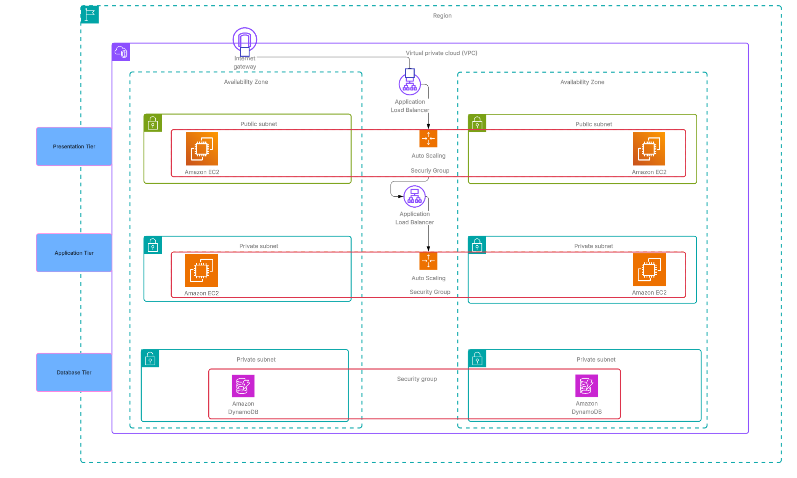
Introduction
In this project, I will be building a 3-tier architecture on AWS to demonstrate my ability to design and deploy scalable, secure, and resilient cloud solutions. A 3-tier architecture is a well-established design pattern that separates an application into three distinct layers, each responsible for a specific set of tasks.
- Presentation Tier – the front-end layer that users interact with, typically delivered through a web interface or mobile client.
- Application Tier – the middle layer that contains the business logic, processes requests, and connects the front-end to the data.
- Database Tier – the back-end layer that manages data storage, retrieval, and integrity.
By clearly separating these tiers, applications gain improved scalability, maintainability, and security, since each tier can be developed, deployed, and scaled independently. On AWS, this design takes advantage of services that align naturally with each tier, allowing for a modern cloud-native implementation.
My goal for this project is not only to build a functioning 3-tier architecture, but also to showcase my ability to apply industry best practices in cloud architecture, leverage AWS services effectively, and think critically about designing solutions that are reliable and efficient.
Phase 1: Networking
The first step was to build the VPC. An Amazon Virtual Private Cloud (VPC) is a logically isolated section of the AWS cloud where you can launch and manage resources such as servers, databases, and applications in a secure environment. It gives you completecontrol over your networking setup, including IP address ranges, subnets, route tables, and security settings.
With a VPC, you can design a network architecture like a traditional data center but with the flexibility and scalability of the cloud. This allows you to define public subnets for resources that need internet access, private subnets for secure internal resources, and use features like security groups and network ACLs to tightly control traffic flow.
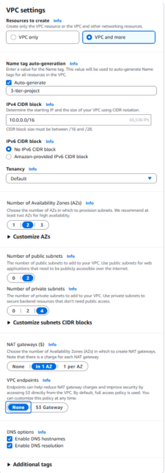
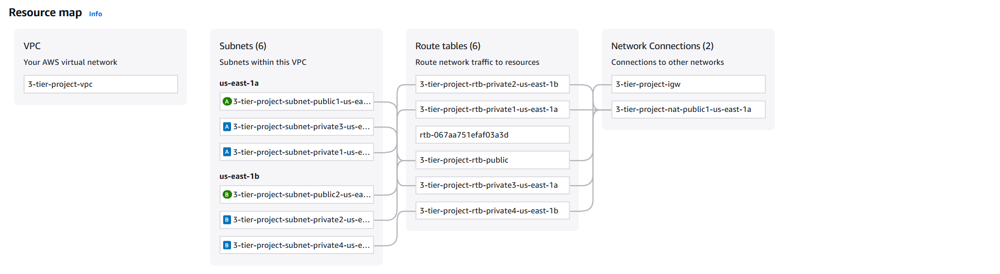
- After creating the VPC, navigate to the Subnets section and verify all six subnets were created
- We now need to configure each public subnet to auto-assign public IPv4 so they can be publicly accessed through the internet. To configure, select one of the public subnets and click Actions on the top right, then click Edit subnet settings .
- Select Enable auto-assign public IPv4 address, then click Save. Repeat for the second public subnet.
Phase 2: Presentation Tier
To build the presentation layer of the 3-tier architecture, we'll launch Amazon EC2 instances inside an Auto Scaling Group (ASG).
Amazon Elastic Compute Cloud (EC2) is a service that provides secure, resizable compute capacity in the cloud. It lets you launch virtual servers, configure operating systems and applications, and pay only for the compute time you use. With EC2, you have full control over your instances—similar to managing your own servers in a data center—while gaining the scalability and flexibility of AWS.
An Auto Scaling Group ensures the right number of EC2 instances are always running to handle demand. It automatically adds instances when traffic increases and removes them when demand falls, helping maintain performance while optimizing costs. ASGs also improve fault tolerance by distributing instances across Availability Zones and replacing unhealthy ones automatically.
For this project, we'll launch an Auto Scaling Group into the two public subnets created in Phase 1. By placing the EC2 instances in public subnets, they can receive traffic from the internet, forming the web tier of the application. This setup ensures that the presentation layer is highly available, fault-tolerant, and capable of scaling in response to user demand.
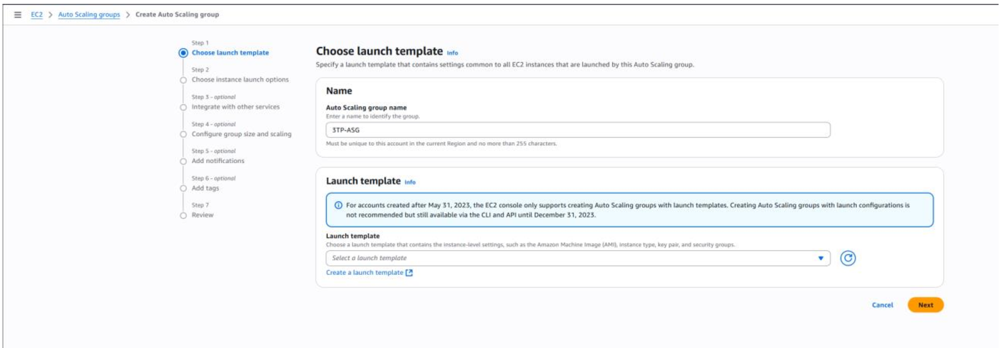
- Begin by navigating to the EC2 dashboard and selecting Auto Scaling Groups from the left-hand menu.
- Click Create Auto Scaling Group to start building the template that defines how the Auto Scaling Group will launch EC2 instances.
- Enter a name for your Auto Scaling Group and then click Create a launch template .
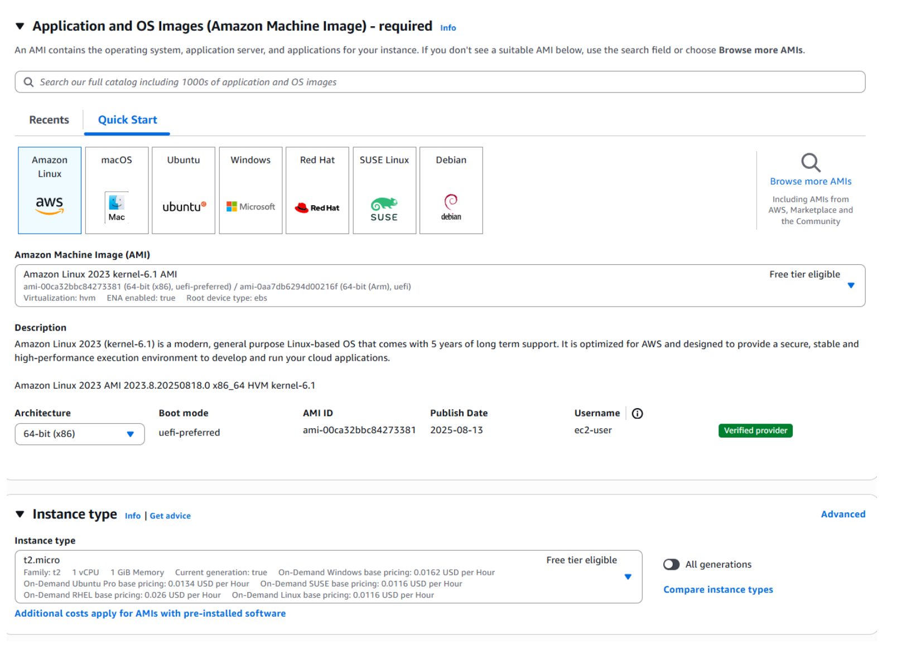
- In the launch template window, start by naming your template. Then select the Amazon Linux 2 AMI and choose the t2.micro instance type.
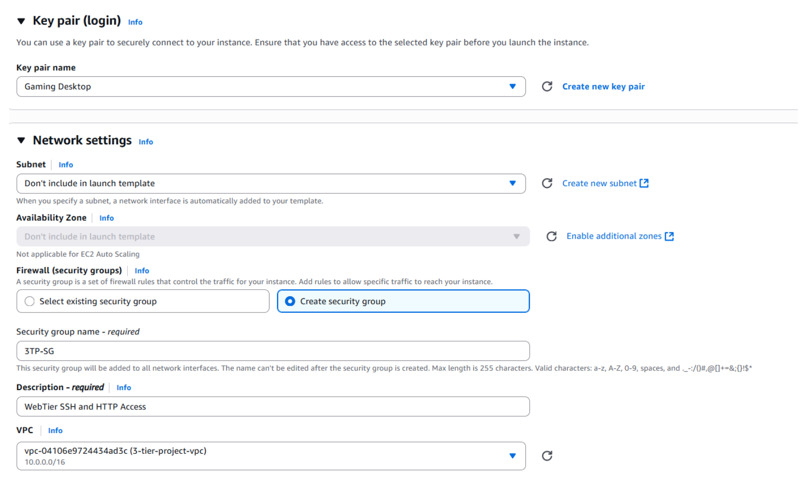
- Next, select an existing key pair or create a new one. After that, create a new Security Group.
- Name your Security Group and be sure to associate it with the VPC you created earlier.
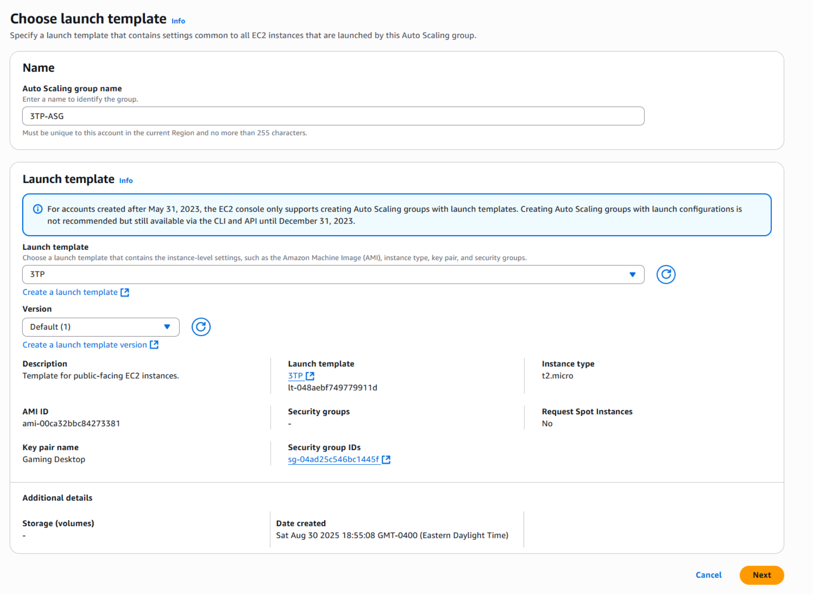
-
Configure the inbound rules to allow SSH (port 22),
HTTP (port 80), and HTTPS (port 443) access
to your public-facing EC2 instances from anywhere
(
0.0.0.0/0). - Leave the remaining options at their defaults and scroll down to Advanced details.
- Paste the following script in the User data field, then click Create launch template.
#!/bin/bash
# Update yum packages
yum update -y
# Install Apache HTTP Web Server
yum install -y httpd.x86_64
# Start and enable Apache
systemctl start httpd.service
systemctl enable httpd.service
# Creates a custom index page (demo welcome page)
echo "<html><body><h1>Welcome to Antoine's Presentation Layer!</h1></body></html>" > /var/www/html/index.html
This script automatically installs and configures the Apache web server, starts the service,
and creates a custom index.html page. By including this script, each new
instance
comes online as a fully configured web server without requiring manual setup.
This ensures every EC2 instance launched by the Auto Scaling Group is immediately
ready to serve traffic.
- Once the launch template has finished creating successfully, return to the Auto Scaling Groups console.
- Select the launch template you just created and click Next.
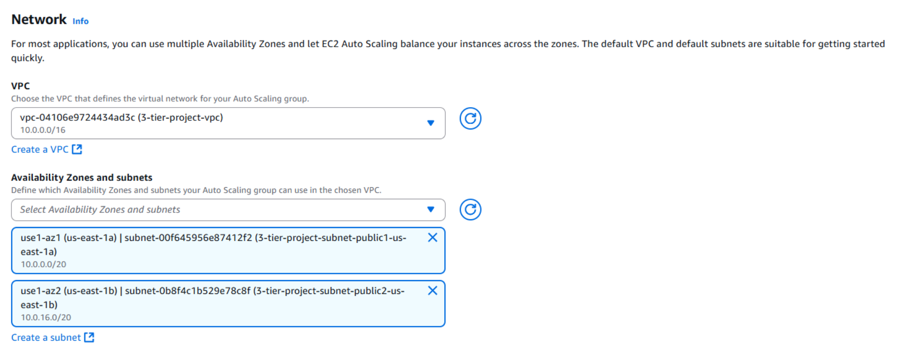
- Select the project VPC you created earlier and choose two public subnets across different Availability Zones (AZs). This ensures that the web tier instances launched by the Auto Scaling Group are publicly accessible and distributed across multiple AZs for high availability and fault tolerance.
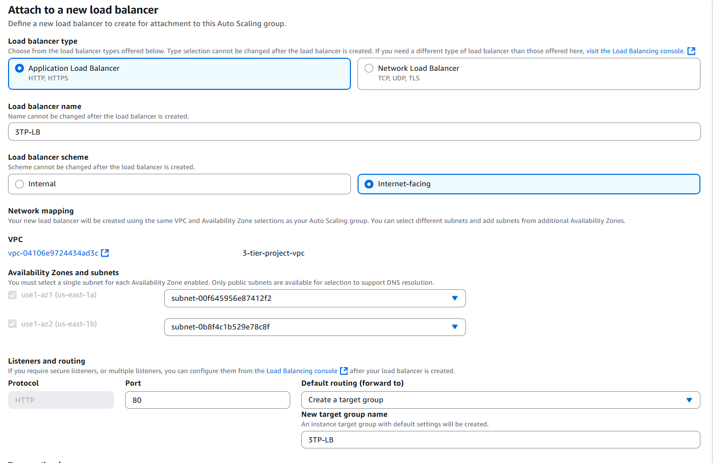
- Attach the Auto Scaling Group to a new Application Load Balancer (ALB). An ALB distributes HTTP/HTTPS traffic across multiple EC2 instances to improve availability and fault tolerance. Choose Attach to a new load balancer, then select Application Load Balancer.
- Name your load balancer, then select Internet-facing.
- Ensure your VPC and both public subnets are selected. Under Listeners and routing, choose Create a target group. This target group will register your EC2 instances for the ALB to route traffic to.
- Scroll down and select Enable group metrics collection within CloudWatch to allow detailed monitoring of the Auto Scaling Group. Then click Next.
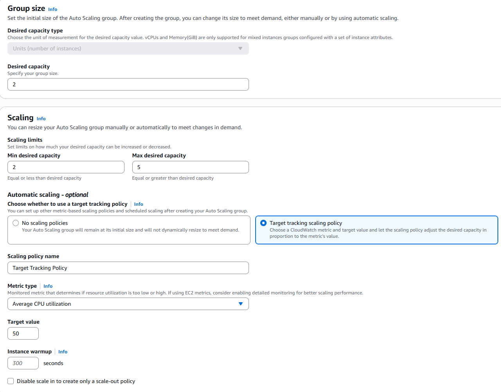
- In the Configure group size and scaling policies section, set Desired capacity to 2, Minimum capacity to 2, and Maximum capacity to 5.
- Under Scaling policies, select Target tracking policy. Make sure the Metric type is Average CPU utilization and the Target value is set to 50. Then click Next.
- Continue through the remaining pages by clicking Next until you reach the Review page. Scroll down and click Create Auto Scaling group.
✅ Your Web Tier's Auto Scaling Group has now been created. Wait a few minutes for it to update the capacity and provision the new EC2 instances.
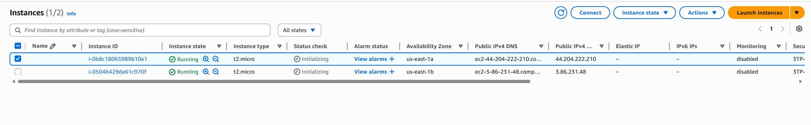
Navigate to your EC2 Instances in the AWS console. You should see two instances launched by the Auto Scaling Group. Once their state changes to Running, copy the public IPv4 address of one instance and paste it into your browser.
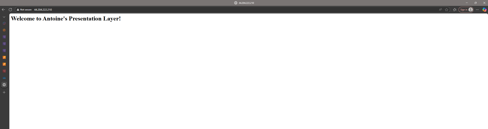
If the setup was successful, the request is routed to your instance and you’ll be greeted with the custom “Welcome to Antoine’s Presentation Layer!” webpage created by the User Data script.
✅ This confirms that the EC2 instances in the Auto Scaling Group are launching correctly, automatically configuring with Apache, and serving web traffic as intended.
Phase 3: Application Tier
With the web tier in place, the next step in building my 3-tier architecture is the Application Tier. This layer contains the business logic that processes requests from the web tier and connects to the database tier. To deploy it, we’ll create a second Auto Scaling Group (ASG) that launches EC2 instances in the two private subnets.
Unlike the web tier, these instances are not publicly accessible. They are designed to only accept inbound traffic from the web tier’s security group. This separation adds a layer of security while ensuring that the application servers can scale dynamically based on demand.
You can think of the application tier as the “engine room” of the architecture. It takes user requests from the front end, applies the core logic, and communicates securely with the database tier for any required data.
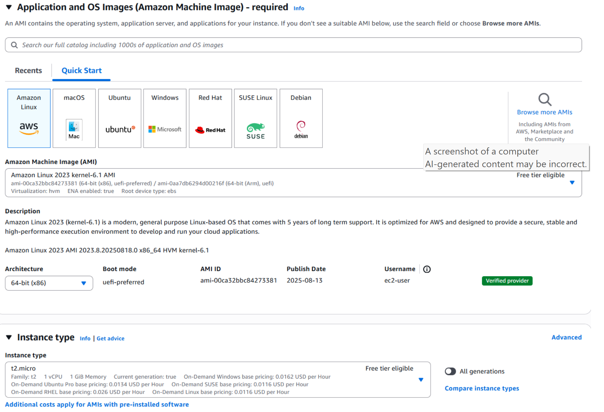
- For consistency, select the same Amazon Linux 2023 (kernel 6.1) AMI and t2.micro instance type as we used in the web tier. Using the same AMI ensures that both tiers run on a lightweight, AWS-optimized operating system, while the t2.micro instance type provides a cost-effective option suitable for demonstration purposes. By keeping the configuration consistent across tiers, it’s easier to manage and troubleshoot the environment while still maintaining clear separation of responsibilities between the web and application layers.
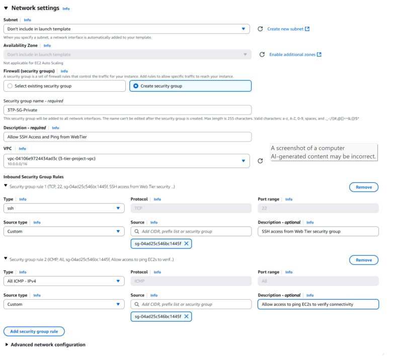
- Configure the Application Tier security group to allow inbound SSH (22) only from the Web Tier security group. This limits administrative access to traffic originating from the web tier.
- Allow ICMP from the Web Tier security group to enable basic connectivity testing (e.g., ping) between tiers.
With these rules in place, the Application Tier remains isolated from the public internet while still accessible from the Web Tier when needed. This layered approach enforces least privilege by restricting communication to only what’s required and reduces the overall attack surface.
💡 Best practice: In production, consider replacing SSH with AWS Systems Manager (SSM) Session Manager to avoid opening port 22 entirely.
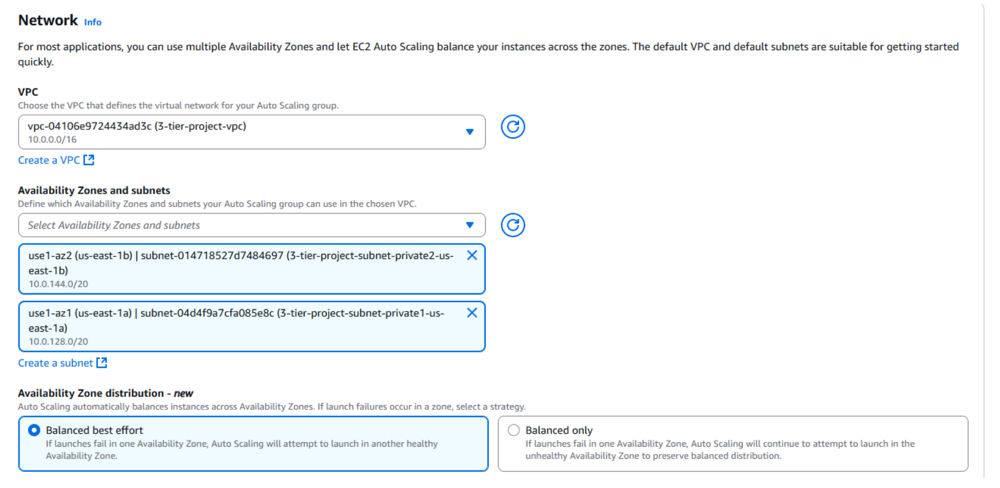
- After creating the launch template, return to the Auto Scaling Group configuration and select your new template.
- Choose the project VPC and map the group to two private subnets in different Availability Zones.
This ensures Application Tier instances launch in private subnets (no direct internet exposure) and are distributed across AZs for high availability and fault tolerance.
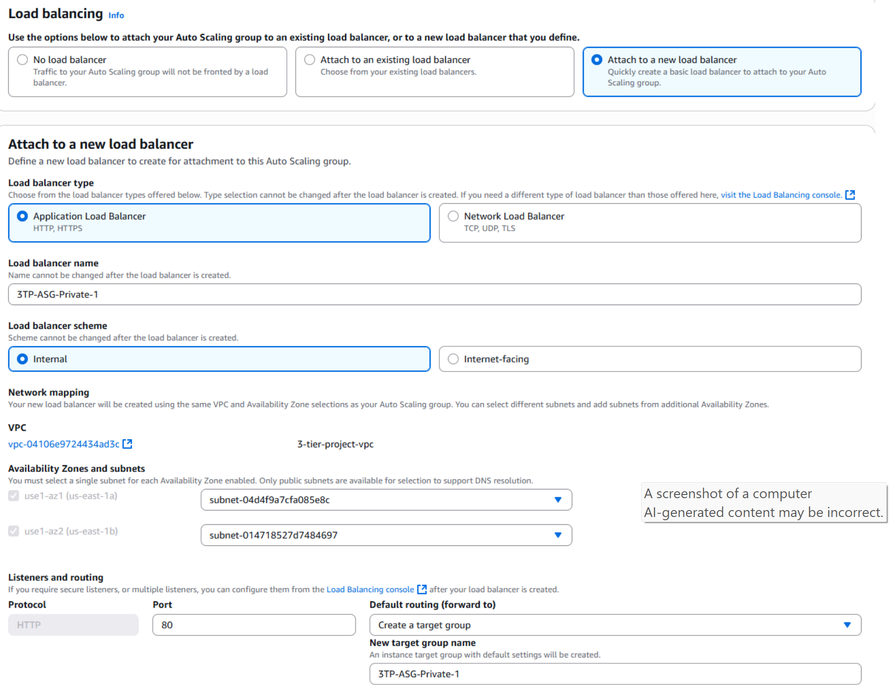
- To handle requests from the Web Tier, create an Application Load Balancer (ALB) and configure it to distribute traffic to the Auto Scaling Group running EC2 instances in the Application Tier.
By placing the ALB between the Web Tier and the Application Tier, traffic is routed efficiently across multiple instances, improving scalability, fault tolerance, and availability. This also keeps the Application Tier private and only accessible through controlled traffic originating from the Web Tier.
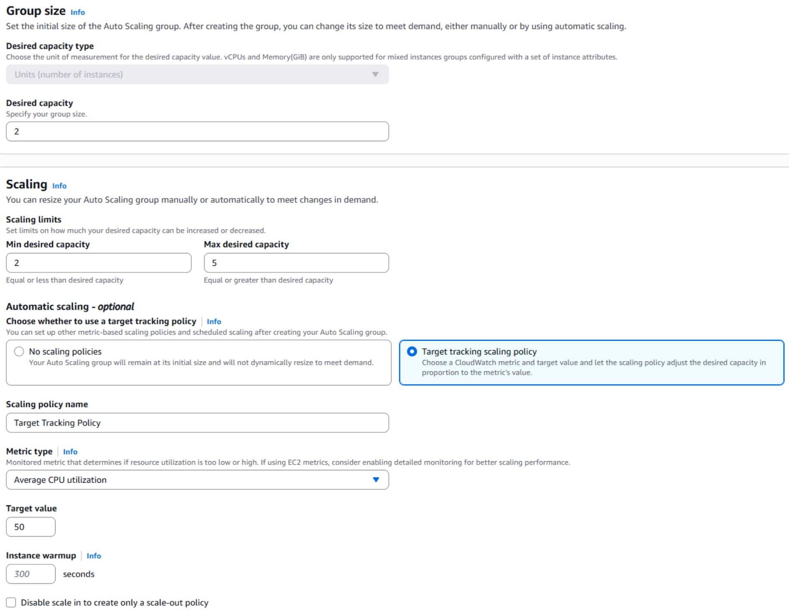
- Configure the group size and scaling policy for the Application Tier’s Auto Scaling Group, just as you configured for the Web Tier.
- Click Next until you arrive at the Review page. Scroll down and click Create Auto Scaling group.
By applying this consistent scaling approach, the Application Tier gains the same benefits of elasticity, high availability, and resilience. This ensures it can seamlessly adjust to variable traffic demands while remaining securely isolated within the private subnets.
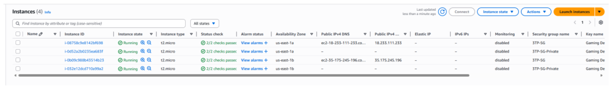
- Wait a few minutes for the Auto Scaling Groups to update capacity and launch new EC2 instances. You should now see 4 EC2 instances in total — 2 from the Web Tier and 2 from the Application Tier — each managed by its own ASG and fronted by an Application Load Balancer.
- Once the EC2 instances are running, select one of the Web Tier instances, choose Actions from the top-right menu, and select Connect.
- In the connection options, choose the SSH Client tab and follow the instructions to connect to your instance using its Public DNS.
-
After connecting to your Web Tier instance, test connectivity to the Application
Tier by
pinging the private IPv4 address of one of the instances in the private subnet:
ping <app_tier_ec2_private_ip_address>
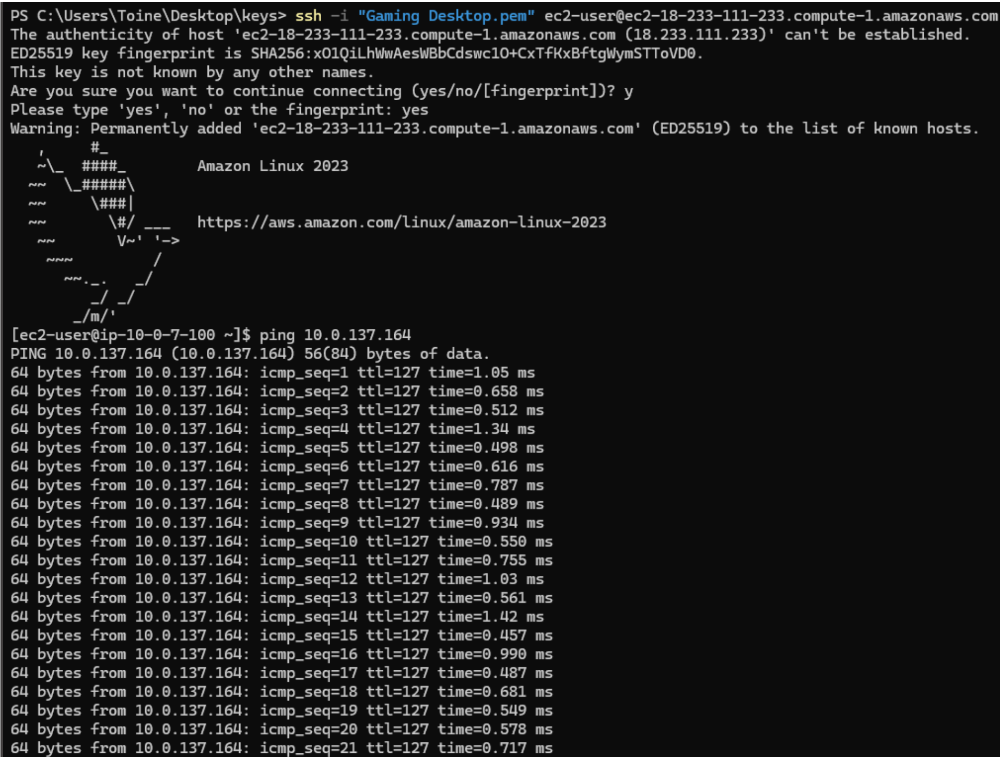
You should start to receive responses, as seen above.
✅ This verifies basic connectivity between the Web Tier and Application Tier.
-
Now that you’ve confirmed connectivity to the private IP, you can SSH into the
Application Tier
instance from the Web Tier. First, exit out of your current EC2 connection by
running:
exit -
Reconnect to your Web Tier EC2 instance with SSH agent forwarding enabled:
ssh -A ec2-user@<web_tier_ec2_public_ipv4_address> -
Once connected to your Web Tier instance, SSH into the Application Tier EC2 instance
in the private subnet:
ssh -A ec2-user@<app_tier_ec2_private_ip_address>
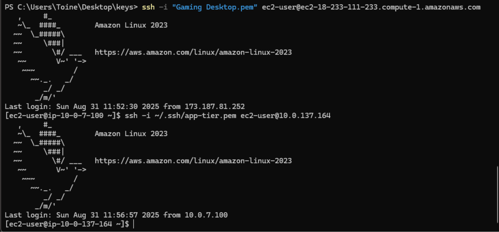
✅ SSH connectivity from a Web Tier EC2 instance to an Application Tier EC2 instance in the private subnet has been successfully verified.
Web Tier → Application Tier communication is functioning as intended, with traffic restricted to flow only between tiers inside the VPC. You can now proceed to Step 4: Building the Database Tier!
Phase 4: Database Tier
For the Database Tier, we’ll use Amazon DynamoDB — a fully managed NoSQL key-value and document database. DynamoDB delivers single-digit millisecond latency, scales automatically, and includes built-in features like point-in-time recovery (PITR) backups and encryption by default. It’s an ideal choice here because it demonstrates scalability and simplicity while eliminating the need to provision or manage database servers.
You can think of DynamoDB as a highly scalable, serverless filing cabinet in the cloud. You store and retrieve items by key, while AWS handles the heavy lifting of scaling, durability, and security behind the scenes.
- To begin, create an Orders table in DynamoDB. Navigate to DynamoDB in the AWS Console and select Tables from the left-hand navigation pane.
- Click Create table.
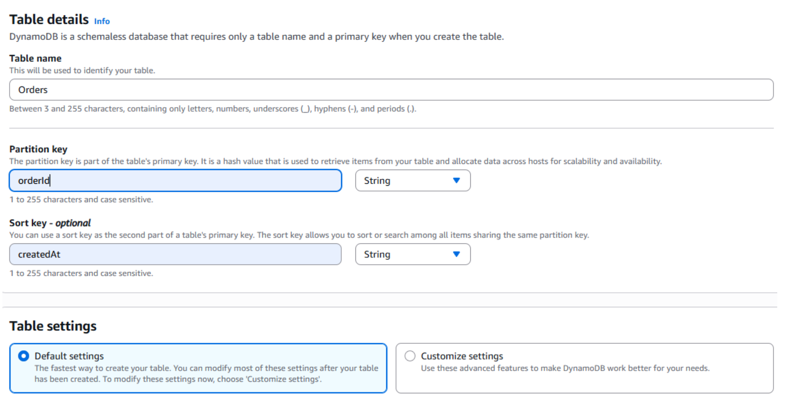
-
Name the table Orders.
For the Partition key, enter
orderId, and for the Sort key, entercreatedAt. The partition key ensures each order record is uniquely identifiable, while the sort key allows for time-ordered queries. This design makes it easy to retrieve all orders for a given orderId and sort them by creation time. - Under Table settings, keep the default option (Default settings), then choose Create table.
Once the table is in ACTIVE status, the next step is to keep all database traffic private by creating a VPC Gateway Endpoint for DynamoDB. This ensures that requests from the Application Tier instances to DynamoDB stay within the AWS network and never traverse the public internet. Using this endpoint allows your application servers in private subnets to securely access DynamoDB without requiring a NAT Gateway or Internet Gateway, improving both security and cost efficiency.
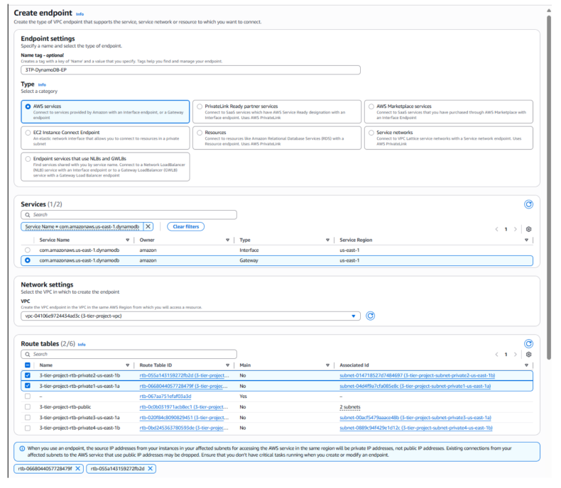
- Open the Amazon VPC console. In the navigation pane, choose Endpoints, then select Create endpoint.
- For Type, choose AWS services. Under Service Name, select the DynamoDB Gateway.
- Select the VPC created for this project, and associate it with the private route tables.
To allow the Application Tier EC2 instances to access DynamoDB securely, we'll create a new IAM role and select EC2 as the trusted service. This ensures that the role can be attached directly to the Application Tier instances (via their Auto Scaling Group), giving them permissions to interact with DynamoDB without the need to store or manage access keys on the servers
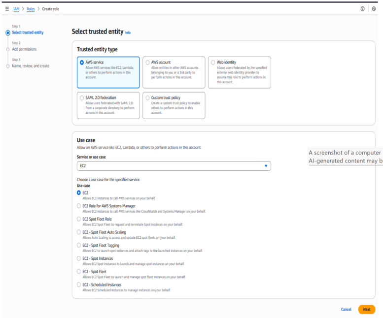
- In the AWS Management Console, navigate to IAM → Roles, then choose Create role.
- For Trusted entity type, select AWS service. Under Use case, choose EC2, then click Next.
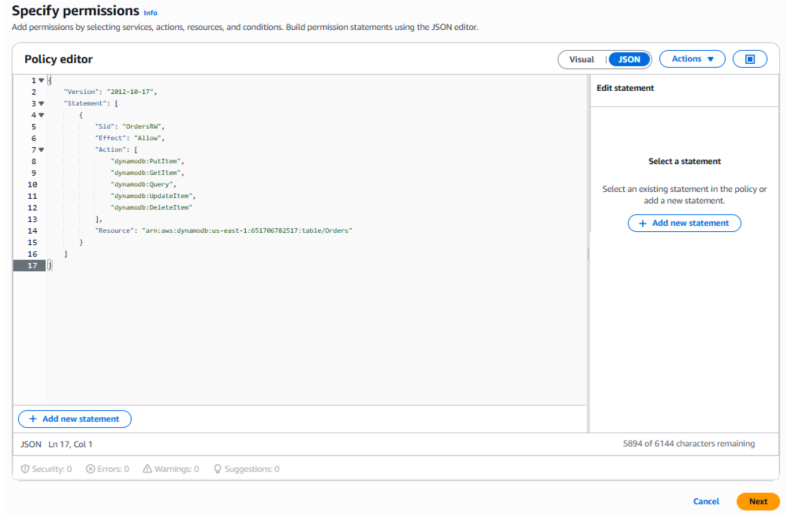
-
In the Policy editor, attach the following policy:
{ "Version": "2012-10-17", "Statement": [ { "Sid": "OrdersRW", "Effect": "Allow", "Action": [ "dynamodb:PutItem", "dynamodb:GetItem", "dynamodb:Query", "dynamodb:UpdateItem", "dynamodb:DeleteItem" ], "Resource": "arn:aws:dynamodb:us-east-1:651670762517:table/Orders" } ] }
This least-privilege policy grants the Application Tier EC2 instances only the necessary permissions to read and write data in the Orders table. By restricting access to the minimum required actions, it ensures secure data handling while reducing the blast radius in case of a misconfiguration or compromise. Following the principle of least privilege strengthens the overall security of the architecture.
Now that the DynamoDBRole has been created, the next step is to attach it to the Application Tier EC2 instances. By assigning the IAM role directly to the instances, they can securely access DynamoDB without the need for hardcoded credentials or access keys. This setup leverages the AWS Instance Metadata Service (IMDS), which automatically provides temporary credentials to the EC2 instances under the assigned role.
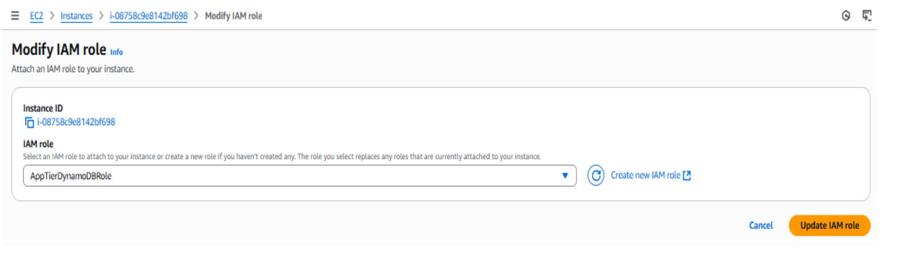
- In the AWS Management Console, navigate to EC2 → Instances. Select one of the Application Tier instances, then choose Actions → Security → Modify IAM role.
- From the drop-down list, select the DynamoDBRole you created.
- Repeat this process for both Application Tier instances to ensure they can securely connect to DynamoDB.
With this step complete, all tiers of the 3-tier architecture are now in place. The final phase is testing and validation to confirm that everything is configured correctly and functioning as expected.
Testing and Validation
With all three tiers of the architecture deployed, we can now perform a series of tests to validate connectivity, security, and functionality across the stack. Starting with the Web → Application Tier, confirm private connectivity through the configured security group rules. Next, from the Application Tier, verify that the attached IAM role and VPC endpoint enable secure, credential-free access to DynamoDB. Finally, test read and write operations both through the AWS CLI and with a simple Python application running directly on an Application Tier instance.
These validation steps confirm that each layer of the 3-tier architecture is properly isolated, connected only where required, and functioning as intended.
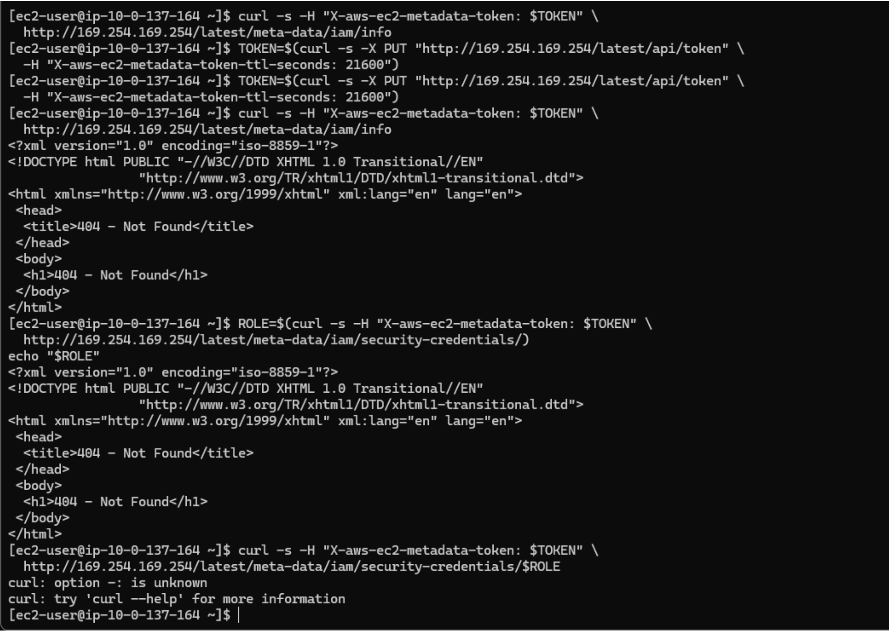
The image above shows where I attempted to verify the IAM role from an Application Tier
instance
using the EC2 Instance Metadata Service (IMDS). However, I kept receiving
404 – Not Found responses. After reviewing my setup, I realized I had
mistakenly
attached the AppTierDynamoDBRole to my Web Tier instances instead of the
Application Tier Auto Scaling Group.
This turned out to be a useful debugging moment because it demonstrated how IMDS returns a 404 when no role is attached to an instance. Identifying this helped me confirm the root cause of the issue. Once corrected, the Application Tier instances were able to assume the role and securely access DynamoDB without requiring credentials.
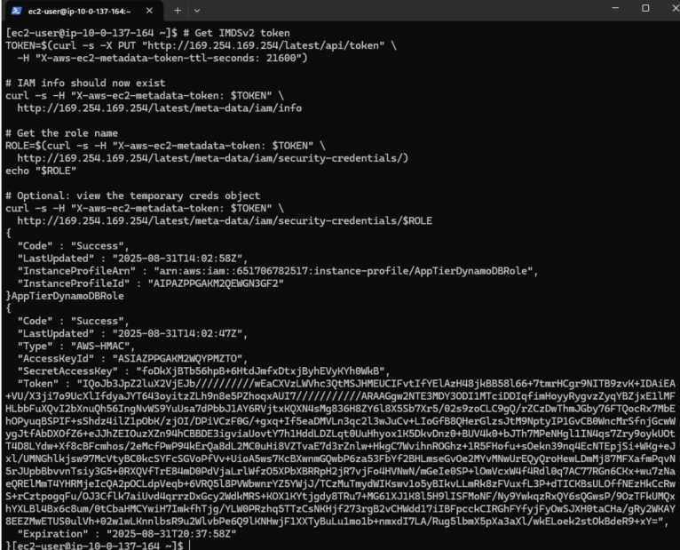
After reattaching the AppTierDynamoDBRole to my Application Tier instances, I re-ran the metadata commands. This time, the EC2 Instance Metadata Service (IMDS) successfully returned details about the attached IAM role and temporary security credentials. This confirmed that the Application Tier instances now had the correct permissions to interact with DynamoDB without the need for hardcoded access keys.
This validation step confirmed that my least-privilege IAM setup was working as intended. Be sure to review and run the metadata commands shown above to test your own role attachments as well.
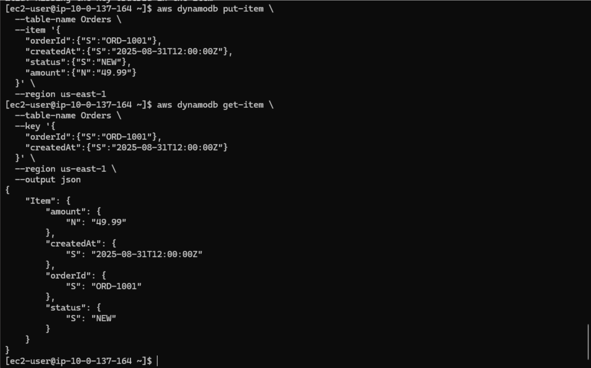
The image above shows an Application Tier EC2 instance where I successfully ran a
put-item command to insert a new record into the Orders table,
followed by a get-item command to retrieve it. The returned JSON includes the
expected attributes (orderId, createdAt, status, and
amount), confirming that the IAM role, VPC endpoint, and DynamoDB integration
are
all functioning as intended. This validates secure, credential-free access from the
Application
Tier to the Database Tier.
Try it yourself using the following AWS CLI commands:
# Insert a new order into the Orders table
aws dynamodb put-item \
--table-name Orders \
--item '{
"orderId": {"S": "1001"},
"createdAt": {"S": "2025-09-30T12:00:00Z"},
"status": {"S": "PENDING"},
"amount": {"N": "49.99"}
}'
# Retrieve the inserted order
aws dynamodb get-item \
--table-name Orders \
--key '{
"orderId": {"S": "1001"},
"createdAt": {"S": "2025-09-30T12:00:00Z"}
}'
Python Validation
For the next validation step, we’ll run a simple Python script to interact with DynamoDB using the boto3 SDK.
-
To prepare the environment, first install python3-pip on the
Application Tier EC2 instance. This package manager allows you to install
additional Python libraries, such as boto3. Run:
sudo dnf -y install python3-pip
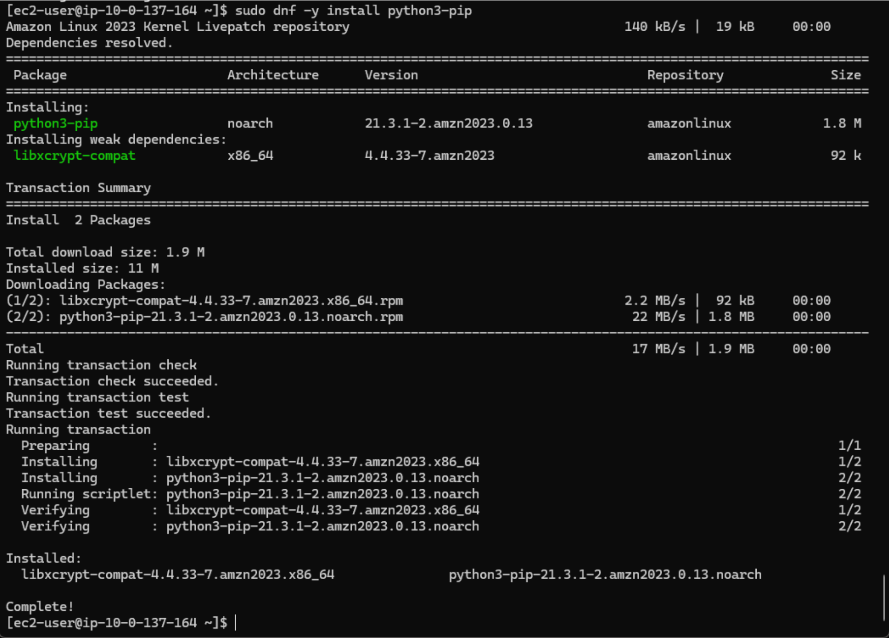
-
Next, create and activate a Python virtual environment, then install boto3:
python3 -m venv ~/venvsource ~/venv/bin/activate
This creates an isolated Python environment, upgrades pip, and installs the AWS SDK for Python (boto3). With this setup, you can write and run Python scripts that securely interact with DynamoDB using the IAM role attached to the instance.pip install --upgrade pip boto3
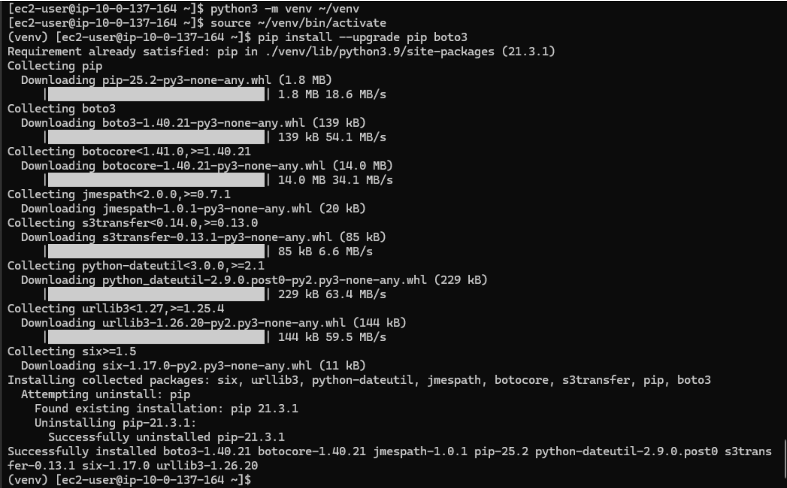
-
Create the script file:
Open a new file called
orders_demo.pyand paste in the code below.nano ~/orders_demo.pyimport os, json, datetime from decimal import Decimal import boto3 REGION = os.getenv("AWS_REGION", "us-east-1") TABLE = os.getenv("TABLE_NAME", "Orders") dynamodb = boto3.resource("dynamodb", region_name=REGION) table = dynamodb.Table(TABLE) order_id = "ORD-1002" created_at = datetime.datetime.utcnow().strftime("%Y-%m-%dT%H:%M:%SZ") # Write an item table.put_item(Item={ "orderId": order_id, "createdAt": created_at, "status": "PAID", "amount": Decimal("109.95") # DynamoDB + Python gotcha: use Decimal, not float }) # Custom encoder to handle Decimal when printing JSON class DecimalEncoder(json.JSONEncoder): def default(self, obj): if isinstance(obj, Decimal): return float(obj) return super(DecimalEncoder, self).default(obj) # Read it back res = table.get_item(Key={"orderId": order_id, "createdAt": created_at}) print(json.dumps(res.get("Item", {}), indent=2, cls=DecimalEncoder)) -
Run the script:
Make sure your virtual environment from the previous step is still active (
(venv)in your prompt). Then run:python3 ~/orders_demo.pyExpected output: Pretty-printed JSON containing
orderId,createdAt,status, andamount. -
Verify in DynamoDB or via CLI:
aws dynamodb get-item \ --table-name "$TABLE_NAME" \ --key "{\"orderId\":{\"S\":\"ORD-1002\"},\"createdAt\":{\"S\":\"$created_at\"}}"Or open the DynamoDB console → Tables → Orders → Explore table items.
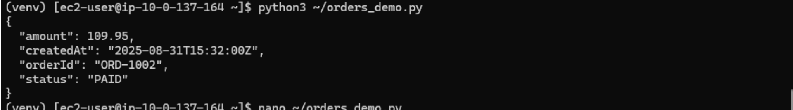
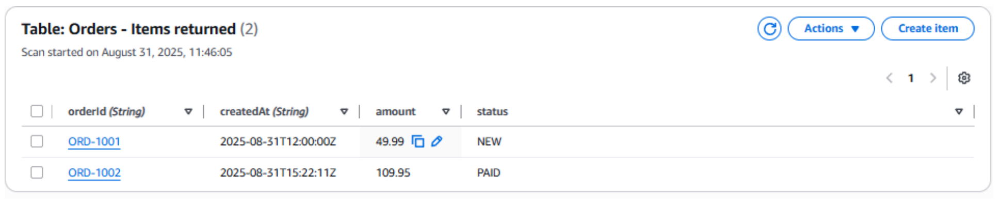